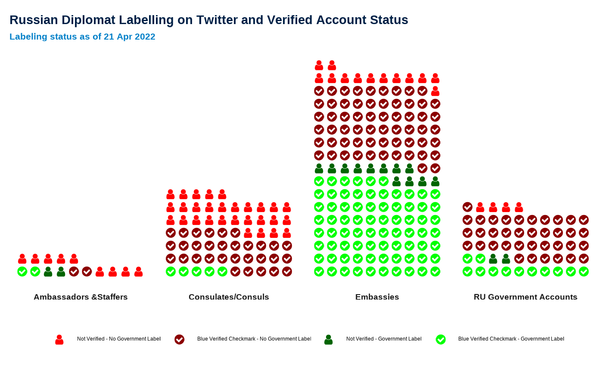

accounts.RmdThe goal of pkgdown is to make it easy to make an elegant and useful package website with a minimum of work. You can get a basic website up and running in just a couple of minutes:
# Run once to configure package to use pkgdown
usethis::use_pkgdown()
# Run to build the website
pkgdown::build_site()
options(tidyverse.quiet = TRUE)
library(tidyverse)
library(disinfo)
# remotes::install_github("hrbrmstr/waffle")
library(waffle)
library(extrafont)
library(emojifont)
# load.fontawesome()
# load.fontawesome(font = "fontawesome-webfont.ttf")
loadfonts(device = "win", quiet = TRUE)
loadfonts(device = "pdf", quiet = TRUE)
ru_accs <- get_accounts(country = "RU",group = "diplomats")## [1] "321 Russian diplomats and government accounts. Twitter transparency labels as of 2022-04-21. Account data as of 2022-04-14."
ru_accs %>%
group_by(cat) %>%
mutate(n_cat = n()) %>%
group_by(cat,n_cat,gov_label = gov_label != "") %>%
summarise(n = n()) %>%
mutate(perc = n/n_cat) %>% filter(gov_label == T)## # A tibble: 6 x 5
## # Groups: cat, n_cat [6]
## cat n_cat gov_label n perc
## <chr> <int> <lgl> <int> <dbl>
## 1 A 7 TRUE 1 0.143
## 2 C 65 TRUE 5 0.0769
## 3 E 162 TRUE 88 0.543
## 4 G 55 TRUE 14 0.255
## 5 QG 11 TRUE 1 0.0909
## 6 S 8 TRUE 3 0.375
veridata <-
ru_accs %>%
group_by(cat) %>%
mutate(n_grp = n()) %>%
group_by(cat,n_grp,govlab = !is.na(gov_label)) %>%
mutate(n_lab = n()) %>%
mutate(perc = n_lab/n_grp) %>%
group_by(cat,n_grp,govlab ,veri = verified != F,n_lab,perc) %>%
summarise(n = n()) %>%
mutate(perc_veri = n/n_lab)
veridata$comb <- interaction(veridata$veri,veridata$govlab)
veridata <-
veridata %>%
group_by(cat) %>%
arrange(desc(comb))
veridata$lab <- NA
veridata$lab[veridata$cat == "A"] <- "Ambassadors &Staffers"
veridata$lab[veridata$cat == "C"] <- "Consulates/Consuls"
veridata$lab[veridata$cat == "S"] <- "Ambassadors &Staffers"
veridata$lab[veridata$cat == "G"] <- "RU Government Accounts"
veridata$lab[veridata$cat == "E"] <- "Embassies"
veridata$lab[veridata$cat == "QG"] <- NA # exclude "Quasi-Gov"
gg3 <-
ggplot(veridata %>% filter(!is.na(lab))) +
geom_pictogram(
aes(colour = comb,label = comb ,values = n),
n_rows = 10, size = 7, flip = TRUE,
family = "fontawesome-webfont"
) +
scale_color_manual(name = NULL,
values = c("red","darkred","darkgreen","green"),
labels = c("Not Verified - No Government Label ",
"Blue Verified Checkmark - No Government Label ",
"Not Verified - Government Label ",
"Blue Verified Checkmark - Government Label ")
)+
scale_label_pictogram(
name = NULL,
values = c("user","check-circle","user","check-circle"),
labels = c("Not Verified - No Government Label ",
"Blue Verified Checkmark - No Government Label ",
"Not Verified - Government Label ",
"Blue Verified Checkmark - Government Label ")
) +
coord_equal() +
facet_wrap(~ lab, scales = "fixed",nrow = 1,
# space = 'free',
drop = T,
strip.position = "bottom") +
labs(x = NULL,y = NULL,
title = "Russian Diplomat Labelling on Twitter and Verified Account Status",
subtitle = paste0("Labeling status as of ",format(unique(ru_accs$labels_scraped),"%d %b %Y")))+
theme_minimal()+
theme(legend.position = "right",
plot.title = ggplot2::element_text(family="Arial",
size=22,
face="bold",
color = "#002147"),
plot.subtitle = ggplot2::element_text(family="Arial",
size=16,
face = "bold",
color= "#007fc8",#oxblue,
margin=ggplot2::margin(0,0,5,0)),
plot.caption = ggplot2::element_blank()) +
theme(axis.ticks.x = element_blank(),
axis.text.x = element_blank(),
axis.ticks.y = element_blank(),
axis.text.y = element_blank(),
panel.grid.minor.y = element_blank(),
panel.grid.major.y = element_blank(),
panel.grid.major.x = element_blank(),
panel.grid.minor.x = element_blank(),
strip.text = element_text(size = 14,family = "Roboto",face = "bold"),
legend.position = "bottom") #+
gg3